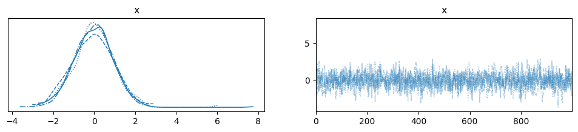
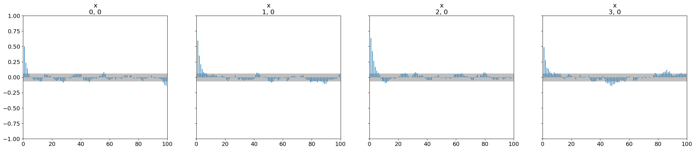

MCMC Diagnostics#
Once you have generated samples from an MCMC chain, it is crucial to assess whether the chain has converged and how many independent samples you have effectively obtained. BlackJAX provides native utilities for common diagnostics, and it integrates seamlessly with ArviZ for more advanced analysis.
import jax
import jax.numpy as jnp
import jax.scipy.stats as stats
import matplotlib.pyplot as plt
import numpy as np
import arviz as az
import blackjax
/home/runner/work/blackjax/blackjax/.venv/lib/python3.12/site-packages/arviz/__init__.py:50: FutureWarning:
ArviZ is undergoing a major refactor to improve flexibility and extensibility while maintaining a user-friendly interface.
Some upcoming changes may be backward incompatible.
For details and migration guidance, visit: https://python.arviz.org/en/latest/user_guide/migration_guide.html
warn(
Generating multiple chains#
Diagnostics like \(\hat{R}\) (R-hat) require multiple chains to compare within-chain and between-chain variance. Let’s set up a simple 1D Gaussian model and sample 4 chains.
def logdensity_fn(x):
return jnp.sum(stats.norm.logpdf(x, 0, 1))
# Sampling parameters
num_chains = 4
num_samples = 1000
step_size = 0.5
inverse_mass_matrix = jnp.ones(1)
nuts = blackjax.nuts(logdensity_fn, step_size, inverse_mass_matrix)
# Initialize multiple chains
rng_key = jax.random.key(0)
initial_positions = jax.random.normal(rng_key, (num_chains, 1)) * 5 # Disperse starting points
initial_states = jax.vmap(nuts.init)(initial_positions)
# Inference loop using jax.lax.scan
def inference_loop(rng_key, initial_state):
@jax.jit
def one_step(state, rng_key):
state, info = nuts.step(rng_key, state)
return state, (state, info)
keys = jax.random.split(rng_key, num_samples)
_, (states, infos) = jax.lax.scan(one_step, initial_state, keys)
return states, infos
# Run chains in parallel using vmap
rng_key, sample_key = jax.random.split(rng_key)
sample_keys = jax.random.split(sample_key, num_chains)
states, infos = jax.vmap(inference_loop)(sample_keys, initial_states)
# states.position has shape (num_chains, num_samples, 1)
print(f"Samples shape: {states.position.shape}")
Samples shape: (4, 1000, 1)
Native BlackJAX Diagnostics#
BlackJAX provides two primary diagnostic functions: potential_scale_reduction (R-hat) and effective_sample_size (ESS). These functions expect an input array with dimensions corresponding to chains and samples.
Potential Scale Reduction (\(\hat{R}\))#
R-hat measures the convergence of multiple chains. A value close to 1.0 (typically \(< 1.05\) or even \(< 1.01\)) indicates that the chains have converged to the same distribution.
rhat = blackjax.rhat(states.position)
print(f"R-hat: {rhat}")
R-hat: 1.0000544786453247
Effective Sample Size (ESS)#
ESS estimates the number of independent samples contained in the chain, accounting for autocorrelation.
ess = blackjax.ess(states.position)
print(f"ESS: {ess}")
ESS: 1067.8232421875
Integration with ArviZ#
While BlackJAX provides core utilities, ArviZ is the industry standard for Bayesian visualization and diagnostic reporting. You can easily convert BlackJAX output to an ArviZ InferenceData object.
Converting to InferenceData#
# ArviZ expects (chain, draw, *shape)
# BlackJAX vmap output is already (chain, draw, *shape)
dataset = az.from_dict(
posterior={"x": states.position},
sample_stats={
"diverging": infos.is_divergent,
"acceptance_rate": infos.acceptance_rate,
}
)
az.summary(dataset)
| mean | sd | hdi_3% | hdi_97% | mcse_mean | mcse_sd | ess_bulk | ess_tail | r_hat | |
|---|---|---|---|---|---|---|---|---|---|
| x[0] | -0.03 | 0.978 | -2.018 | 1.616 | 0.03 | 0.027 | 1087.0 | 1112.0 | 1.0 |
Visualizing Convergence#
You can use ArviZ to plot trace plots, which help visually inspect chain mixing and convergence.
az.plot_trace(dataset)
plt.show()

Autocorrelation#
Autocorrelation plots help understand how quickly the information in the chain is being “refreshed.”
az.plot_autocorr(dataset)
plt.show()

Pareto Smoothed Importance Sampling (PSIS)#
BlackJAX also includes psis_weights, which is useful for algorithms like Pathfinder or Variational Inference to assess the quality of the approximation and perform importance resampling.
# Dummy log-ratios for demonstration
log_ratios = jax.random.normal(rng_key, (1000,))
log_weights, pareto_k = blackjax.diagnostics.psis_weights(log_ratios)
print(f"Pareto k statistic: {pareto_k}")
# A value of k < 0.7 is generally considered a good approximation.
Pareto k statistic: 0.24542365968227386